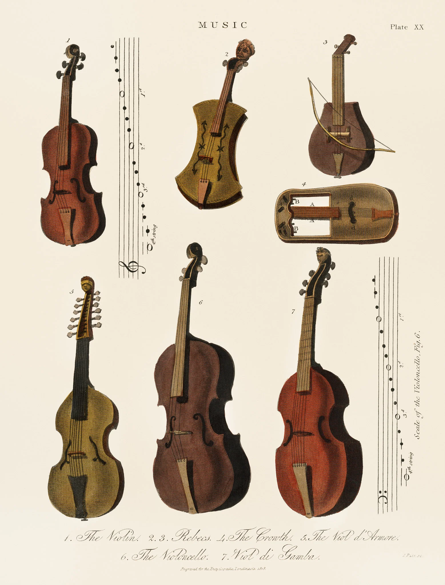
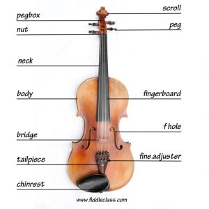

A brief History of the Violin
The exact origins of bowed string instruments are unclear. There is evidence of bowed string instruments dating back to the ninth and tenth centuries,
and scholars still debate whether the bow was introduced by Europe or the Middle East. The earliest records of violins appear in the early to mid-sixteenth century.
The 1530 painting by Gaudenzio Ferrari, Madonna of the Orange Tree, shows a cherub playing a bowed instrument with the features of a violin.
The earliest written records of violins come from France and Italy, dating to the mid to late 1530s.

Some of my favourite violin pieces:
| Title |
Composer |
| Romanze |
Symphonie Espagnol |
Violin Concerto in A major |
Violin Sonata no.9 |
| Johann Svendsen |
Edouard Lalo |
Mieczysław Karłowicz |
Ludwig van Beethoven |
Parts of the Violin
- Scroll
- A curled piece of wood at the top of the violin which houses the pegbox
- Pegbox
- A hollow box in which the pegs are secured
- Pegs
- Wooden sticks around which the strings are wound - they can be turned to tune the strings
- Neck
- Long section of the violin that the strings run down
- Fingerboard
- Black board on the neck that you place your fingers on to change the pitch of the strings
- Bridge
- Delicate wooden structure that holds up the strings
- Tailpiece
- Secures the strings at the bottom of the violin
- Fine tuners/adjusters
- Small screws on the tailpiece which can tune the strings with greater accuracy - not all violins have them
- Chinrest
- Slightly elevated rest near the bottom of the violin where the jaw rests on while playing
- F-holes
- Curled holes either side of the bridge
